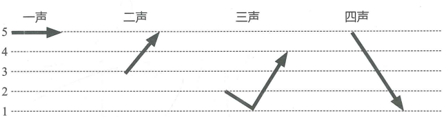

1Ngữ âm
Âm tiết tiếng Trung Quốc
Trong tiếng Trung Quốc, mỗi chữ Hán thường tương ứng với một âm tiết. Một âm tiết thường bao gồm thanh mẫu, vận mẫu và thanh điệu; đôi khi chỉ gồm vận mẫu và thanh điệu.
| Thanh mẫu | Vận mẫu | Thanh điệu | Âm tiết | Chữ Hán |
|---|---|---|---|---|
| b | a | − | bā | 八 |
| b | a | ˊ | bá | 拔 |
| b | a | ˇ | bǎ | 把 |
| b | a | ˋ | bà | 爸 |
| — | a | − | ā | 啊 |
| — | a | ˊ | á | 啊 |
Thanh mẫu và vận mẫu (1)
Thanh mẫu và vận mẫu kết hợp với nhau tạo thành âm tiết, nhưng không phải tất cả đều có thể ghép tùy ý. “n, l” ghép được với “ü” và các vận mẫu bắt đầu bằng “ü”; “b, p, f” không ghép với “e”; “f, g, k, h” không ghép với “i”. Vận mẫu “er” đứng độc lập, không ghép với thanh mẫu.
b p m f
d t n l
g k h
a o e i [i] u er
ai ei ao ou
an en
ang eng ong
Thanh điệu
Tiếng Trung Quốc có 4 thanh điệu cơ bản: thanh 1 (55), thanh 2 (35), thanh 3 (214) và thanh 4 (51). Dấu thanh điệu được đặt trên nguyên âm chính của vận mẫu. Thanh điệu khác nhau thì ý nghĩa cũng có thể khác nhau.

| ā | á | ǎ | à |
| ē | é | ě | è |
| — | ér | ěr | èr |
| dā | dá | dǎ | dà |
| kē | ké | kě | kè |
2Nghe, đọc và luyện tập
Hãy nghe audio và hoàn thành tất cả câu hỏi. Đáp án chỉ xuất hiện sau khi nộp bài.